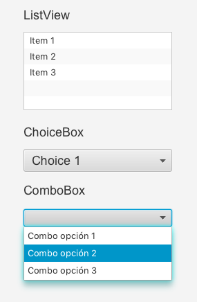
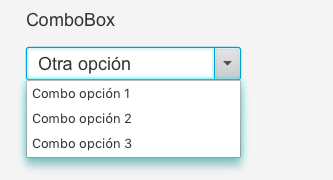

JavaFX ComboBox
El control ComboBox de JavaFX permite a los usuarios elegir una opción de una lista predefinida de opciones, o escribir otro valor si ninguna de las opciones predefinidas coincide con lo que el usuario desea seleccionar.
El control ComboBox de JavaFX está representado por la clase javafx.scene.control.ComboBox.
De los tres controles de selección, este es el más utilizado.
Crear un ComboBox
Se puede crear un ComboBox simplemente creando una nueva instancia de la clase ComboBox. Por ejemplo:
ComboBox comboBox = new ComboBox();
Añadiendo opciones a un ComboBox
Podemos añadir opciones a un ComboBox obteniendo su colección de elementos (getItems()) y añadir los elementoscon su método add()). Por ejemplo:
comboBox.getItems().add("Combo opción 1");
comboBox.getItems().add("Combo opción 2");
comboBox.getItems().add("Combo opción 3");En SceneBuilder podemos arrastrar el control a nuestra escena. Tampoco podremos rellenar nuestro ComboBox desde Scene Builder, deberemos utilizar el método correspondiente.
@Override
public void initialize(URL url, ResourceBundle rb) {
// TODO
dpto.getItems().add("Personal");
dpto.getItems().add("Informática");
dpto.getItems().add("Comercial");
dpto.getSelectionModel().selectFirst();
}Añadiendo un ComboBox al gráfico de escena
Para hacer visible un ComboBox, se debe añadir al escenario gráfico. Esto significa que se debe añadir ComboBox a un objeto de escena o a algún componente de diseño que luego se adjunta al objeto de escena.
Por ejemplo:

Lectura del valor seleccionado
Podemos leer el valor seleccionado de un ComboBox a través de su método getValue(). Si no se selecciona ninguna opción, el método getValue() devuelve null. Por ejemplo:
String value = (String) comboBox.getValue();Hacer que el ComboBox sea editable
Un ComboBox no se puede editar de forma predeterminada. Eso significa que, de manera predeterminada, el usuario no puede añadir nada por sí mismo, sino que solo puede elegir de la lista predefinida de opciones. Para hacer que un ComboBox sea editable, debemos llamar al método setEditable() del ComboBox. Por ejemplo:
comboBox.setEditable(true);Una vez que ComboBox es editable, el usuario puede escribir valores en el ComboBox. El valor añadido también se lee a través del método getValue(). La siguiente captura de pantalla muestra un ComboBox JavaFX que es editable y con un valor personalizado añadido:

Escuchando la selección
Es posible escuchar los cambios de selección en un ComboBox de JavaFX configurando un oyente de acción en el ComboBox a través de su método setOnAction().
A diferencia del ChoiceBox, este control si tiene ese método en Scene Builder.
Un ejemplo de configuración de un oyente de acción en un ComboBox que lee qué valor se seleccionó en el ComboBox:
int selectedIndex;
...
comboBox01.setOnAction((event) -> {
selectedIndex = comboBox.getSelectionModel().getSelectedIndex();
Object selectedItem = comboBox.getSelectionModel().getSelectedItem();
System.out.println("Selection made: [" + selectedIndex + "] " + selectedItem);
System.out.println(" ComboBox.getValue(): " + comboBox.getValue());
});